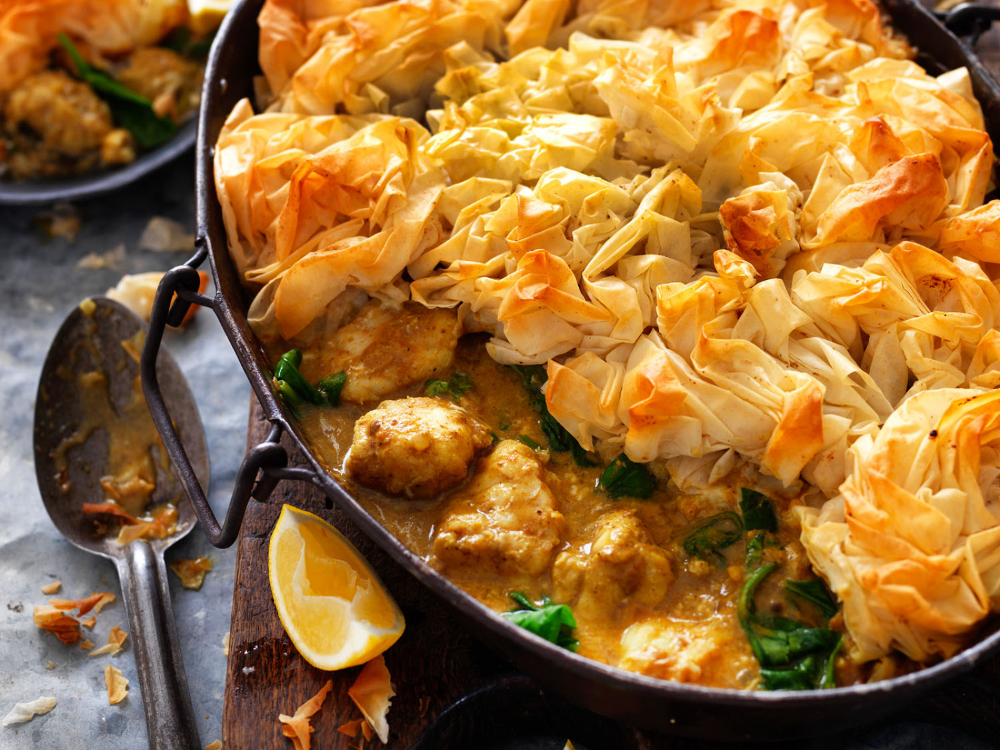

Punjabi Lemon Curry Fish Pie
This Punjabi fish curry pie is made with coconut milk and topped with lovely folds of crispy filo pastry.
This recipe is lovely all year around, and is an interesting dish to add to your Easter menu.

Ingredents:
Fish Curry
1 tablespoon vegetable oil
20g butter
1 onion, finely chopped
1 tablespoon plain flour
1 x 375g Passage to India Punjabi Lemon Simmer Sauce
270ml coconut milk
1.2kg white fish fillets, cut into 5cm pieces
100g baby spinach leaves
Steamed vegetables and lemon wedges to serve
Crispy Flo Topping
10-12 sheets of filo pastry
50g melted butter
½ teaspoon garam masala
Method:
Fish Curry
- Preheat oven 200°C/180°C (fan-forced)
- Heat oil and butter in a pan over medium-high heat. Cook onion for 2-3 minutes or until softened. Add plain flour and cook for 1 minute
- Stir in Punjabi Lemon Simmer Sauce and coconut milk. Cook 2 minutes or until mixture thickens. Add fish and gently mix through hot sauce. Stir in baby spinach and mix until just wilted. Transfer fish curry to a large (12 cup capacity) baking dish
Crispy Filo Topping
- Brush one sheet of filo with melted butter and sprinkle over a little garam masala. Scrunch up and place on top of the fish mixture. Repeat with remaining sheets of filo, melted butter and garam masala to create a lid
- Bake 20-30 minutes or until pastry is golden and crisp. Stand 5 minutes. Serve immediately with wedges of lemon
Hints and Tips
Choose any firm white fish such as ling, monk fish or blue-eye cod